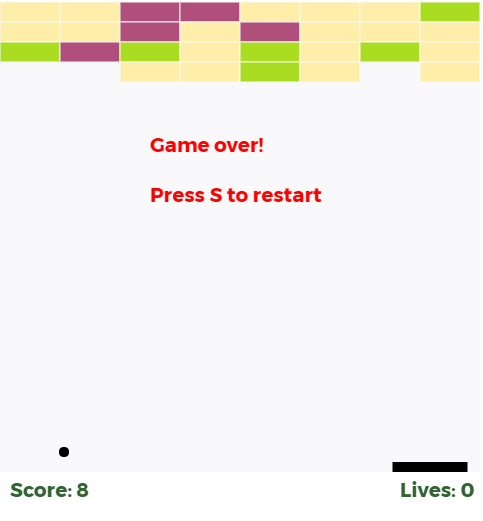
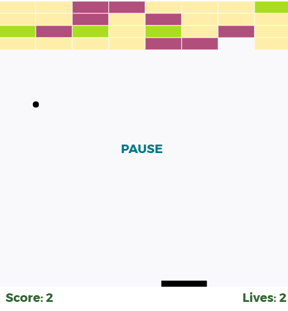
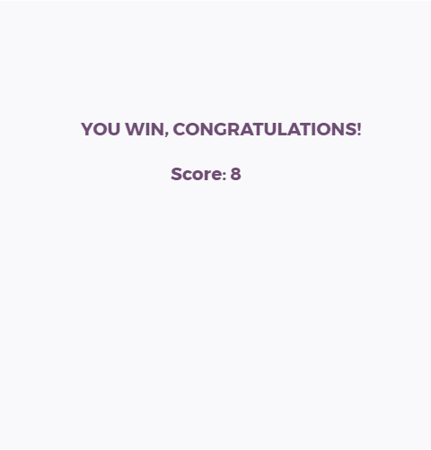

DESCRIPTION
Move the mouse to change paddle position.
To pause press enter
In case of loss or victory, press s to restart



Breakout is an arcade game developed and published by Atari, Inc.It was conceptualized by Nolan Bushnell and
Steve Bristow, influenced by the 1972 Atari arcade game Pong, and built by Steve Wozniak aided by Steve Jobs.
The game was ported to multiple platforms and upgraded to video games such as Super Breakout. In addition,
Breakout was the basis and inspiration for certain aspects of the Apple II personal computer.
In the game, a layer of bricks lines the top third of the screen. A ball travels across the screen,
bouncing off the top and side walls of the screen. When a brick is hit, the ball bounces away and the
brick is destroyed. The player loses a turn when the ball touches the bottom of the screen. To prevent this
from happening, the player has a movable paddle to bounce the ball upward, keeping it in play.